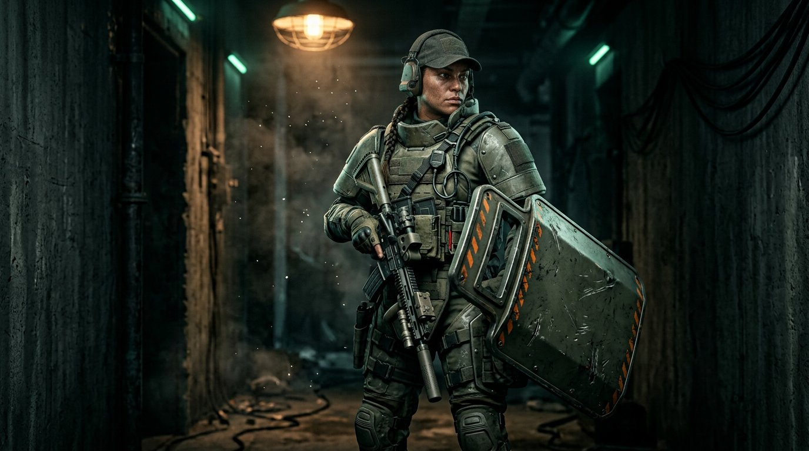
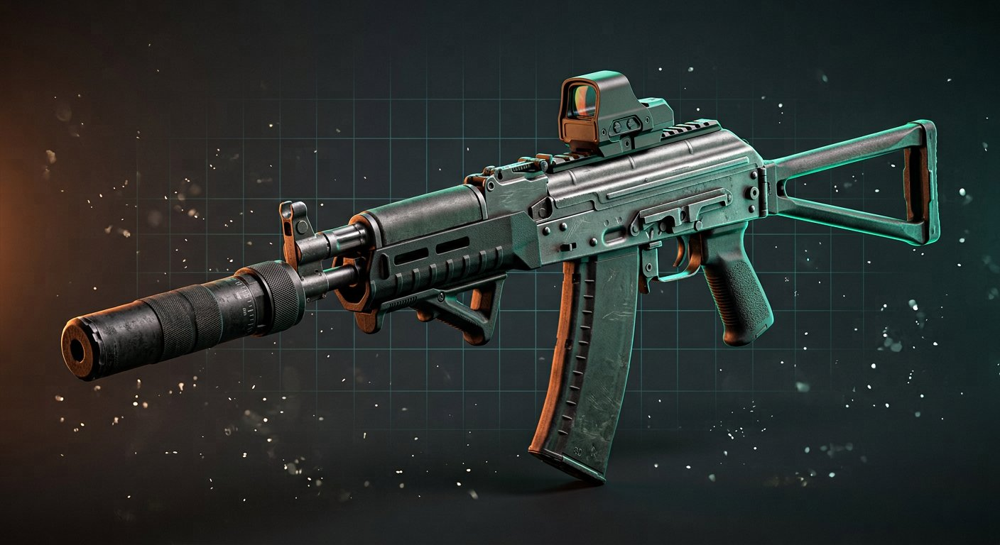
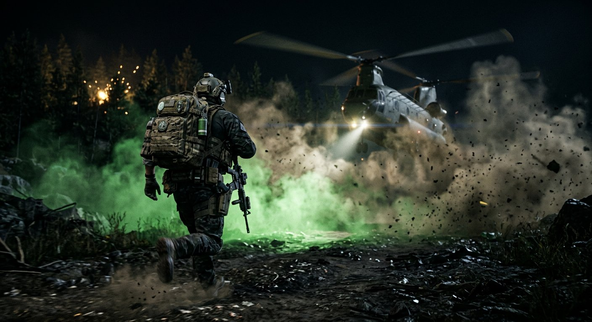
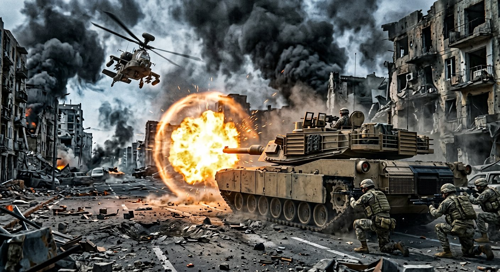
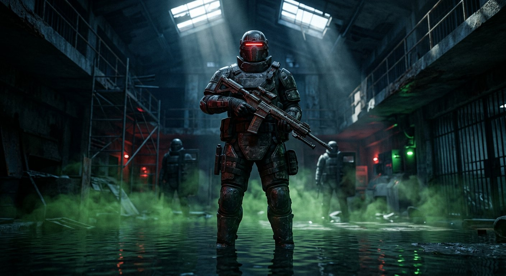

DELTA FORCE
THE ULTIMATE
OPERATOR'S GUIDE
Every Raid. Every Operator. Every Edge.
Le guide francophone le plus complet sur Delta Force : 19 opérateurs décortiqués, armurerie intégrale, 6 cartes d'extraction, 8 boss, 101 keycards, Black Site, Havoc Warfare, campagne Black Hawk Down et une batterie d'outils tactiques. Données vérifiées et sourcées, à jour de la Saison Aurora.
Ce qui change avec Aurora
Déployée le 10 novembre 2026 à 02:00 UTC sans interruption de service, la Saison 12 apporte une nouvelle opératrice, un nouveau fusil d'assaut, la refonte de Brakkesh, une carte Warfare inédite et cinq munitions.
Nouvel opérateur Assault : Martelo (Veronica Cardozo)
Ariete (charge bouclier), Smoke Halo, Grenade HE, passif Guerreira. Débloquée gratuitement via le Season Pass.
Brakkesh 2.0
Refonte de Babel et de la Central Command Zone + mode de conflit de factions Haavk Corp vs Ahsarah Guard, badge de faction, chasses de faction.
Nouvelle carte Warfare : Zenith Port
Assaut côtier du G.T.I. sous couverture de la flotte. Événement Riptide : les missiles guidés interceptés explosent en mer et génèrent des vagues géantes qui déplacent les combats sur les toits. Physique de vagues pour véhicules amphibies.
Akh Canal retirée du pool Warfare
Aucune raison donnée dans les patch notes.
Nouvelle arme : AN-94 (5.45x39mm)
Fusil d'assaut réservé aux opérateurs Assault. Event kill-mission 10/11 → 10/12/2026 (Avatar Breakout + Tactical Armament Vouchers).
5 nouvelles munitions
.300BLK TIV, .300BLK TTV, 5.56x45mm CINDER, 9x19mm 7N30, 5.45mm SPALL.
Explorer le guide

Les 19 opérateurs
Fiches complètes : capacités, forces, faiblesses, counters, synergies d'escouade et ordre de déblocage recommandé.

Armurerie
Toutes les armes avec statistiques, accessoires et codes de build importables en un clic. AN-94 incluse.

Hazard Operations
Le mode extraction de A à Z : boucle de jeu, économie, Black Site, boss, keycards et survie.

Cartes interactives
Six cartes d'extraction avec marqueurs filtrables : extractions, boss, keycards, loot et portes à code.

Havoc Warfare
Combat interarmes 32v32 : véhicules, tier list, contre-jeu anti-blindé et la nouvelle carte Zenith Port.

Black Hawk Down
Les sept chapitres de la campagne coopérative gratuite, inspirée de la bataille de Mogadiscio.

Les 8 boss
Saeed, Reis, Blue Eagle, Desmoulins, Hudson, Warden Ghroth, Raven et H1000 : phases, points faibles et butin.

Saison Aurora
Patch notes complets, calendrier des 17 events datés, season pass et priorités à ne pas rater.
Tier list des opérateurs
La tier list de Delta Force n'est pas unique : un opérateur excellent en extraction peut être médiocre à 64 joueurs. Voici les deux classements qui comptent.
Codes de portes
| Carte | Code | Emplacement de la porte |
|---|---|---|
| Zero Dam | 8865 | Côté droit de la Major Substation : ramper dans le pipeline souterrain jusqu'au bout du passage. |
| Layali Grove | 4565 | Entrée souterraine près du point marqué dans le coin inférieur droit de la carte. |
| Brakkesh | 6468 | Côté nord du Hammam (Old Bath). |
| Space City | 8572 | Industrial Zone — Assembly Room, 2e étage. |
| Tide Prison | 2161 | Prison Administrative Area, 1er étage, coin de l'escalier du hall. |
| AZ3 Nuclear Plant | 2430 | Bâtiments situés près de la Seawater Treatment Area. |
OPÉRATEUR. Saison Aurora active. Brakkesh reconfigurée : les factions Ahsarah et Haavk recrutent sur le terrain. Zenith Port sous le feu — attendez-vous à des vagues. Cinq nouvelles munitions en circulation, dont deux détonantes. Vérifiez votre niveau de pénétration avant de partir. Terminé.
Outils tactiques
Quinze outils interactifs qui tournent entièrement dans votre navigateur, sans compte ni installation.
Calculateur TTK / STK / DPS
Combien de balles, en combien de temps, contre quelle armure.
Simulateur de pénétration
Munition niveau 1→6 contre armure niveau 1→6, verdict immédiat.
Black Site Planner
Ordre d'amélioration optimal et coûts en Tekniq Alloys.
Codes de build copiables
40+ codes vérifiés, import en un clic dans le jeu.
Calculateur eDPI
Convertissez votre sensibilité sans perdre vos repères.
Générateur de loadout
Un défi aléatoire : opérateur, arme, munitions, carte.
Tier list drag & drop
Composez et partagez votre propre classement.
Quiz tactique Aurora
12 questions sur la saison. Score honnête garanti.
Données sourcées et datées
Chaque chiffre de ce guide provient de sources publiques identifiées : patch notes, bases de données communautaires, guides spécialisés et retours de joueurs. Toutes les sources sont horodatées dans le journal de recherche du projet.
Écarts assumés
Quand les sources contredisent une idée reçue, nous suivons les sources : 19 opérateurs et non 18, 5 nouvelles munitions et non 2, AZ3 Supercritical au 18 décembre et pas au lancement. Les points incertains sont marqués « À CONFIRMER ».
Jeu en service continu : un guide est toujours un instantané. Dernière vérification complète des données le 19 novembre 2026.